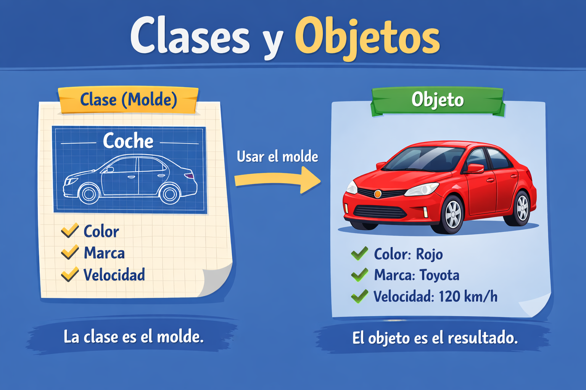

En Java, las clases y los objetos son la base de la programación. Ayudan a organizar la información y a crear programas más ordenados.
Una clase es como un molde o diseño que se usa para crear cosas en un programa. En ese molde se definen las características que tendrán.
Por ejemplo, si la clase es un coche, en ella se puede indicar el color, la marca y la velocidad. La clase no es un coche real, sino el modelo que sirve para crear diferentes coches.
Un objeto es un elemento específico que se crea a partir de una clase. Por ejemplo, si la clase es “Coche”, un objeto sería un coche en particular, como un coche rojo de cierta marca.
Aunque varios objetos pertenezcan a la misma clase, no tienen que ser iguales, ya que cada uno puede tener características diferentes. Por ejemplo, todos pueden ser coches, pero uno puede ser rojo y otro azul, o de distinta marca.
Es importante no confundirlos: la clase es el modelo o la idea general, mientras que el objeto es un ejemplo concreto que se crea a partir de ese modelo y que se utiliza dentro del programa.

En este ejemplo se crea una clase llamada Persona y después se crea un objeto.
class Persona {
String nombre;
int edad;
}
public class Principal {
public static void main(String[] args) {
Persona persona1 = new Persona();
persona1.nombre = "Ana";
persona1.edad = 20;
}
}
Aquí "Persona" es la clase, y "persona1" es el objeto.
Selecciona cuál es un objeto: